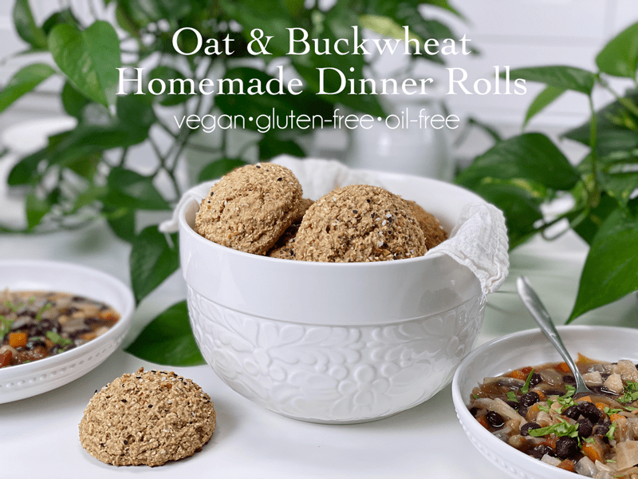
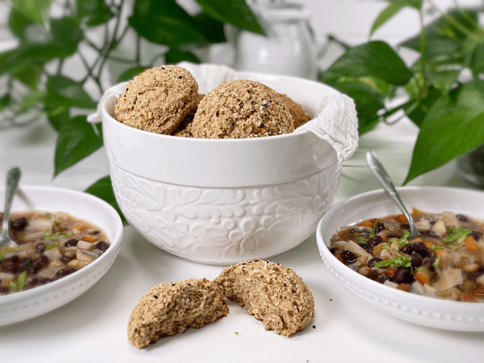
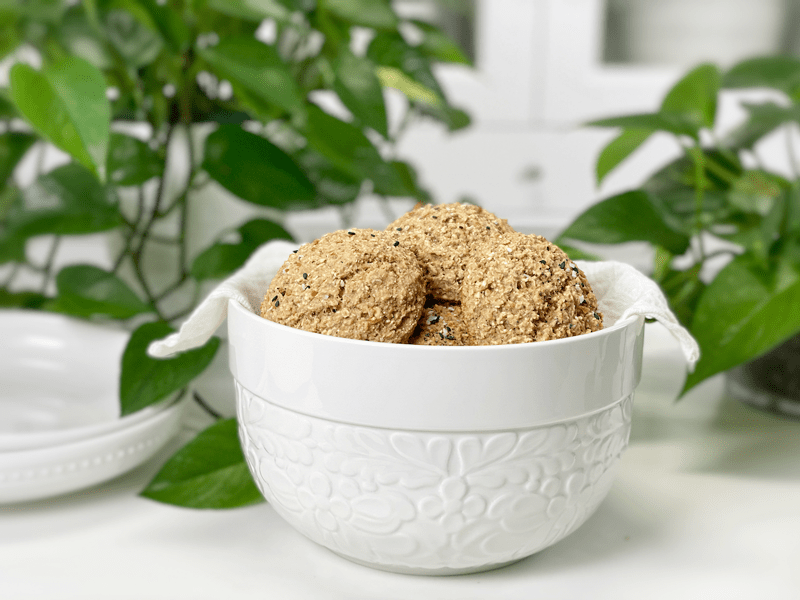
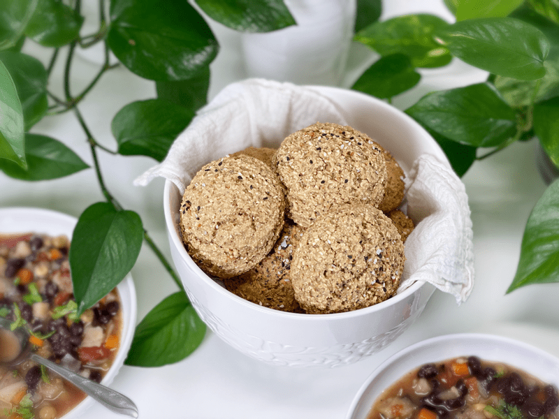

Oat & Buckwheat Homemade Dinner Rolls | Gluten-Free | Vegan | Nut-Free
These quick-mix homemade dinner rolls were the answer to a prayer after creating a large pot of vegetable soup. Who here loves to dip their bread into a bowl of warm soup? Raise your hand, please. I see you. Did you know that the proper way to eat soup at formal gatherings dictates that you should never dip your bread into your soup? Who comes up with this stuff?

Instead, you are to sip your soup off the spoon, place the spoon on the plate, and then use the same hand you used for your spoon to pick up your bread and take a bite. *Throws etiquette out the window and drives her homemade roll deep into the bowl of soup, pausing to allow some of the broth to be soaked up into the roll.* Ah, now that’s what I am talking about.
Flavor and Texture of these Dinner Rolls
Before I take up a few moments of your time geeking out (spoiler alert), it’s important to explain what you can expect from this recipe. These wholesome, nutrient-dense dinner rolls have the right kind of chew, with the perfect crumb. They are neutral in flavor, pairing perfectly with any dish.

Oats are one of the quintessential foods of the traditional Scottish diet (working on my accent so I can move there–I LOVE oats!). In terms of health benefits, they are best known for beta-glucan, which is is a natural soluble fiber that attracts water and turns to gel during digestion. Soluble fiber takes longer to digest, thus making you feel full longer. This is old-school information, but one thing that I have come to learn about is avenanthramides.
Ever You Ever Heard of Avenanthramides?
I came upon some studies showing that oats have a component in them called avenanthramides… this right here, folks, is why I don’t do videos… I can’t pronounce such words, but I can type them. I would waste ten minutes of your time just trying to spit that word out. (haha) If you want the pronunciation, click (here). My tongue starts to twist once it hits the first “n.” Anyway, in all these years of using and learning about oats, I’d never stumbled upon this bit of information before.
For those who like to geek out when it comes to food science, I thought you might enjoy the following information. Avenanthramides are found only in oats and have been found to be bioavailable in humans and are reported to modulate different signaling pathways associated with cancer, diabetes, inflammation, and cardiovascular diseases. They possess an array of bioactivities, including…
- Anti-inflammation – the property of a substance or treatment that reduces inflammation or swelling.
- Antiproliferation – of or relating to a substance used to prevent or retard the spread of cells, especially malignant cells, into surrounding tissues.
- Antioxidation – preventing or slowing damage to cells caused by free radicals.
- Antipruritic – used to relieve itching.
- Vasodilator Activities – they affect the muscles in the walls of your arteries and veins, preventing the muscles from tightening and the walls from narrowing. As a result, blood flows more easily through your vessels.
- Source – 1,2, 3

Anyway, I will stop there… there’s a lot to be said about this topic, and if you find it interesting, Google and time are your friends. But I will quickly add that buckwheat and psyllium husks are ALSO soluble fiber, so these rolls are loaded with gut-healthy fiber! If that doesn’t excite you… how can we be friends? Boy, I am a real jokester today, aren’t I? I hope you enjoy these dinner rolls. Please leave a comment below. blessings, amie sue
 Ingredients
Ingredients
Yields 5 (1/2 cup measurement) rolls
- 1 1/2 cups gluten-free rolled oats
- 1/2 cup raw buckwheat
- 1 Tbsp psyllium husks (not powder)
- 1/2 tsp baking soda
- 1 cup unsweetened plant-based milk
- 1 Tbsp apple cider vinegar
- 2 tsp vegetable bouillon
- 1 tsp white chickpea miso
Preparation
- Preheat the oven to 450 degrees (F) and line the baking sheet with parchment paper.
- In a small bowl, combine the plant milk and apple cider vinegar; set aside for 10 minutes so it can curdle (think buttermilk).
- I used oat milk in my dinner rolls.
- In a food processor, fitted with the “S” blade, combine the oats, buckwheat, psyllium, and baking soda.
- Process long enough so the dry ingredients mix together and so the oats and buckwheat can break down some. It doesn’t need to be processed into flour.
- Add the vegetable bouillon and miso, along with the “buttermilk.” Process till well combined.
- Scoop out dough onto the parchment paper-lined baking sheet.
- I used a 1/2 cup ice cream/cookie scoop, making sure to level it off.
- If the dough seems a little wet, allow it to sit for about 10 minutes. The psyllium husks will start to thicken the texture.
- Bake for 10-12 minutes until lightly brown.
- Immediately transfer the rolls to the cooling rack so the bottoms don’t get soggy.
- Store on the counter in an airtight container for roughly 3 days. These also freeze and thaw well.

Close-up Shots
© AmieSue.com